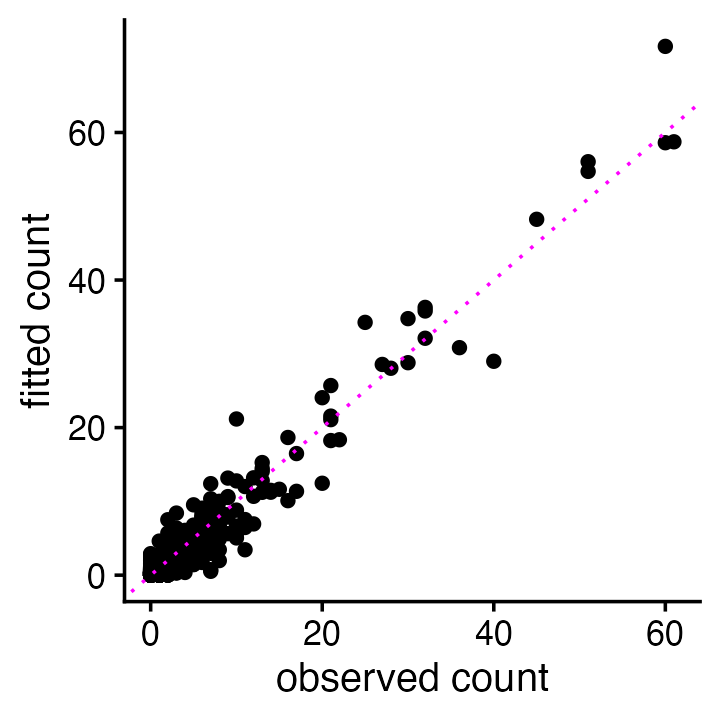
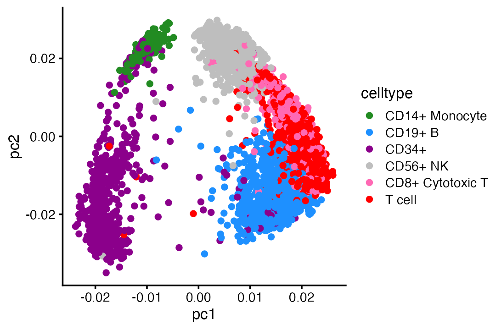

vignettes/intro_fastglmpca.Rmd
intro_fastglmpca.RmdThe aim of this vignette is to introduce the basic steps involved in fitting GLM-PCA model to single-cell RNA-seq data using fastglmpca. (See Townes et al 2019 or Collins et al 2001 for a detailed description of the GLM-PCA model.)
To begin, load the packages that are needed.
Set the seed so that the results can be reproduced.
set.seed(1)We will illustrate fastglmpca using a single-cell RNA-seq data set from Zheng et al (2017). These data are reference transcriptome profiles from 10 bead-enriched subpopulations of peripheral blood mononuclear cells (PBMCs). The original data set is much larger; for this introduction, we have taken a subset of roughly 3,700 cells.
The data we will analyze are unique molecular identifier (UMI) counts. These data are stored as an \(n \times m\) sparse matrix, where \(n\) is the number of genes and \(m\) is the number of cells:
The UMI counts are “sparse”—that is, most of the counts are zero. Indeed, over 95% of the UMI counts are zero:
mean(pbmc_facs$counts > 0)
# [1] 0.04265257For the purposes of this vignette only, we randomly subset the data further to reduce the running time:
Now we have a 3,000 x 3,774 counts matrix:
dim(counts)
# [1] 3000 3774Since no preprocessing of UMI counts is needed (e.g., a
log-transformation), the first step is to initialize the model fit using
init_glmpca_pois(). This function has many input arguments
and options, but here we will keep all settings at the defaults, and we
set K, the rank of the matrix factorization, to 2:
fit0 <- init_glmpca_pois(counts,K = 2)By default, init_glmpca_pois() adds gene- (or row-)
specific intercept, and a fixed cell- (or column-) specific size-factor.
This is intended to mimic the defaults in glmpca.
init_glmpca_pois() has many other options which we do not
demonstrate here.
Once we have initialized the model, we are ready to run the
optimization algorithm to fit the model (i.e., estimate the model
parameters). This is accomplished by a call to
fit_glmpca_pois():
fit <- fit_glmpca_pois(counts,fit0 = fit0)If you prefer not to wait for the model optimization (it may take
several minutes to run), you are welcome to load the previously fitted
model (which is the output from the fit_glmpca_pois call
above):
fit <- pbmc_facs$fitThe return value of fit_glmpca_pois() resembles the
output of svd() and similar functions, with a few other
outputs giving additional information about the model:
names(fit)
# [1] "U" "V" "fixed_b_cols" "fixed_w_cols" "loglik"
# [6] "progress" "X" "B" "Z" "W"
# [11] "d"In particular, the outputs that are capital letters the low-rank reconstruction of the counts matrix:
fitted_counts <- with(fit,
exp(tcrossprod(U %*% diag(d),V) +
tcrossprod(X,B) +
tcrossprod(W,Z)))Let’s compare (a random subset of) the reconstructed (“fitted”) counts versus the observed counts:
i <- sample(prod(dim(counts)),2e4)
pdat <- data.frame(obs = as.matrix(counts)[i],
fitted = fitted_counts[i])
ggplot(pdat,aes(x = obs,y = fitted)) +
geom_point() +
geom_abline(intercept = 0,slope = 1,color = "magenta",linetype = "dotted") +
labs(x = "observed count",y = "fitted count") +
theme_cowplot(font_size = 12)
The U and V outputs in particular are interesting because they give low-dimensional (in this case, 2-d) embeddings of the genes and cells, respectively. Let’s compare this 2-d embedding of the cells the provided cell-type labels:
celltype_colors <- c("forestgreen","dodgerblue","darkmagenta",
"gray","hotpink","red")
celltype <- as.character(pbmc_facs$samples$celltype)
celltype[celltype == "CD4+/CD25 T Reg" |
celltype == "CD4+ T Helper2" |
celltype == "CD8+/CD45RA+ Naive Cytotoxic" |
celltype == "CD4+/CD45RA+/CD25- Naive T" |
celltype == "CD4+/CD45RO+ Memory"] <- "T cell"
celltype <- factor(celltype)
pdat <- data.frame(celltype = celltype,
pc1 = fit$V[,1],
pc2 = fit$V[,2])
ggplot(pdat,aes(x = pc1,y = pc2,color = celltype)) +
geom_point() +
scale_color_manual(values = celltype_colors) +
theme_cowplot(font_size = 10)
The 2-d embedding separates well the CD34+ and CD14+ cells from the others, and somewhat distinguishes the other cell types (B cells, T cells, NK cells).
This is the version of R and the packages that were used to generate these results.
sessionInfo()
# R version 4.3.3 (2024-02-29)
# Platform: aarch64-apple-darwin20 (64-bit)
# Running under: macOS Sonoma 14.5
#
# Matrix products: default
# BLAS: /Library/Frameworks/R.framework/Versions/4.3-arm64/Resources/lib/libRblas.0.dylib
# LAPACK: /Library/Frameworks/R.framework/Versions/4.3-arm64/Resources/lib/libRlapack.dylib; LAPACK version 3.11.0
#
# locale:
# [1] en_US.UTF-8/en_US.UTF-8/en_US.UTF-8/C/en_US.UTF-8/en_US.UTF-8
#
# time zone: America/Chicago
# tzcode source: internal
#
# attached base packages:
# [1] stats graphics grDevices utils datasets methods base
#
# other attached packages:
# [1] cowplot_1.1.3 ggplot2_3.5.0 fastglmpca_0.1-106 Matrix_1.6-5
#
# loaded via a namespace (and not attached):
# [1] sass_0.4.8 utf8_1.2.4 generics_0.1.3
# [4] lattice_0.22-5 startupmsg_0.9.6.1 digest_0.6.34
# [7] magrittr_2.0.3 evaluate_0.23 grid_4.3.3
# [10] daarem_0.7 float_0.3-2 fastmap_1.1.1
# [13] sfsmisc_1.1-18 jsonlite_1.8.8 purrr_1.0.2
# [16] fansi_1.0.6 scales_1.3.0 RhpcBLASctl_0.23-42
# [19] textshaping_0.3.7 jquerylib_0.1.4 cli_3.6.2
# [22] rlang_1.1.3 munsell_0.5.0 withr_3.0.0
# [25] cachem_1.0.8 yaml_2.3.8 tools_4.3.3
# [28] parallel_4.3.3 memoise_2.0.1 dplyr_1.1.4
# [31] colorspace_2.1-0 distr_2.9.3 vctrs_0.6.5
# [34] R6_2.5.1 lifecycle_1.0.4 fs_1.6.3
# [37] MASS_7.3-60.0.1 ragg_1.2.7 MatrixExtra_0.1.15
# [40] pkgconfig_2.0.3 desc_1.4.3 pkgdown_2.0.7
# [43] RcppParallel_5.1.7 bslib_0.6.1 pillar_1.9.0
# [46] gtable_0.3.4 glue_1.7.0 Rcpp_1.0.12
# [49] systemfonts_1.0.6 highr_0.10 xfun_0.42
# [52] tibble_3.2.1 tidyselect_1.2.1 knitr_1.45
# [55] farver_2.1.1 htmltools_0.5.7 labeling_0.4.3
# [58] rmarkdown_2.26 compiler_4.3.3